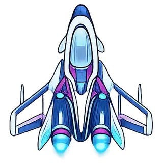

Una nave.
Diez sectores por conquistar.
Recupera fragmentos de CRONIUM tras la caída del Centro Cronos y descubre qué alteró la historia humana.

La Onda de Choque
Perímetro exterior del Centro Cronos
Localiza la señal de emergencia y recupera los fragmentos temporales del corredor.
Selecciona un sector
Configuración
Compilación V7.0.0 · Visual Upgrade
Cómo se juega
Núcleo: alimenta la nave y completa el objetivo. Cada nivel tiene una cantidad limitada.
Amenazas: meteoritos, restos metálicos y satélites dañan distintos porcentajes del casco.
Formación de basura espacial: cruza por el pasillo cian. Las amenazas no pueden aparecer dentro mientras esté protegido.
Sistemas que pueden caer
◉Escudo: absorbe impactos durante unos segundos.
⌁Rayo tractor: conecta un cable y atrae un solo objeto cada vez.
◷Estabilizador: reduce temporalmente la velocidad del campo.
×2Sobrecarga: duplica la energía procesada.
+Drone de reparación: restaura parte del casco. Puede no aparecer.
ϟPhaser: daña o destruye meteoritos, restos y satélites situados en la trayectoria frontal.
Sistemas detenidos
La Onda de Choque completada
Nuevo sector desbloqueado
El casco ha cedido
NUEVO RÉCORD